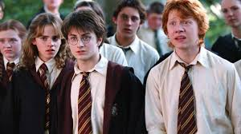
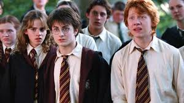

Harry Potter es una serie de novelas fantásticas escrita por la autora británica J. K. Rowling, en la que se
describen las aventuras del joven aprendiz de magia y hechicería Harry Potter y sus amigos Hermione Granger y
Ron Weasley, durante los años que pasan en el Colegio Hogwarts de Magia y Hechicería. El argumento se centra en
la lucha entre Harry Potter y el malvado mago Lord Voldemort, quien asesinó a los padres de Harry en su afán de
conquistar el mundo mágico.
Myrtle la Llorona, esa niña que siempre llora en los baños, es un personaje inspirado en las mujeres
que J.K. Rowling vio llorar en los baños de bares.
El mayor miedo de Lord Voldemort nunca fue Harry, sino la muerte.
A la creadora de Harry Potter no le gustó del todo el romance entre Ron y Hermione, pues afirmó que se
arrepentía un poco de haberlos juntado.
 
